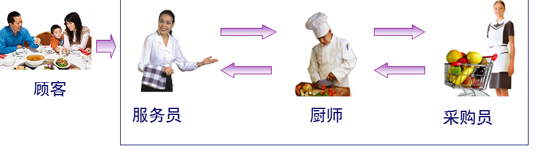
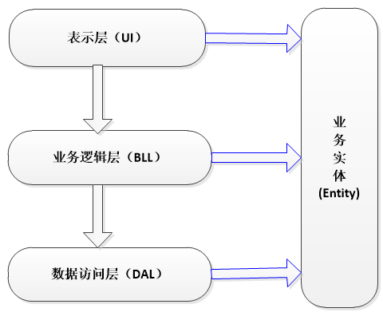
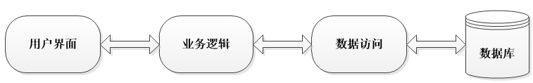
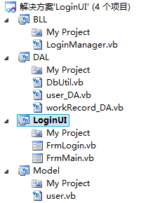
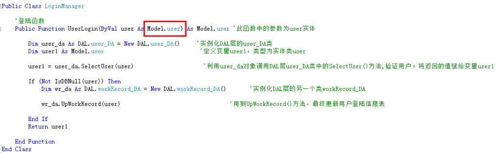
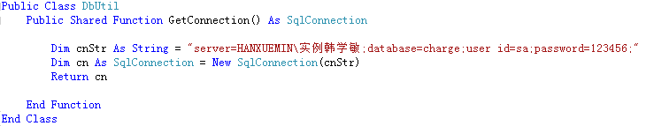
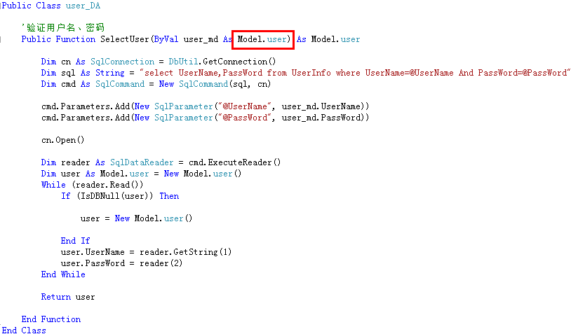
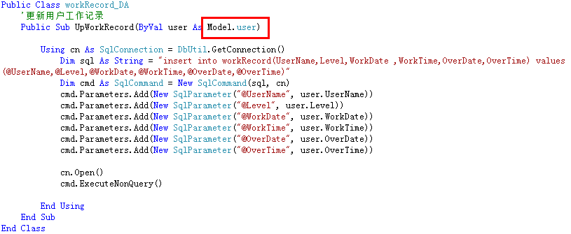

ずっと完全で完璧なまとめを作りたいと思っていました。しかし、あれこれ考えても、どう書き始めたらいいのか分かりません。何事も始めるのが難しいと言いますが、今日は乱れていた考えを整理してみました。ですが、やはりうまく整理できず、思いつくままに書いていこうと思います。
初心者はなかなか理解できません：
- 1、三層とは何か？
- 2、なぜ三層を使うのか？
- 3、三層はこれまで使われてきた二層と比べて何が違うのか？その優位性はどこにあるのか？
- 4、三層をどう学べばいいのか？三層をどう応用するのか？……
このブログで皆さんに一つ一つ説明していきます。皮毛をかじった程度の知識しかありませんが、どうかご容赦ください！！！
米先生はいつも強調しています：学習と生活を結びつけ、学習と生活を関連付けることこそが、本当に学ぶことであり、本当に生きることなのだと。
三層について、どのように現実と結び付けるかをあれこれ考えました。すると、昨夜突然「ひらめき」が訪れました。『大話設計模式』のある章で、大鳥と小菜が羊肉串を食べる話を覚えていますか——屋台で食べていたのがレストランで食べるようになったことから引き出されたコマンドパターンの話です（もちろん今日はコマンドパターンを研究するわけではありません）。ウェイター、コック、購買担当者。
これはまさに典型的な三層アーキテクチャではないでしょうか？？？(⊙ o ⊙)あっ！はは（これについては後で説明します）

まず理解しましょう：
1、三層とは何か？
UI（表現層）：主にユーザーと対話するインターフェースを指します。ユーザーが入力したデータを受け取り、処理後にユーザーが必要とするデータを表示するために使われます。
BLL：（ビジネスロジック層）：UI層とDAL層の間の橋渡しです。ビジネスロジックを実現します。ビジネスロジックには具体的に、検証、計算、業務ルールなどが含まれます。
DAL：（データアクセス層）：データベースを扱います。主にデータの追加、削除、変更、検索を実現します。データベースに保存されているデータをビジネス層に渡し、同時にビジネス層で処理されたデータをデータベースに保存します。（もちろん、これらの操作はすべてUI層に基づいています。ユーザーのニーズはインターフェース（UI）に反映され、UIはBLLに反映され、BLLはDALに反映され、DALがデータ操作を行い、操作後に順に返していき、最終的にユーザーが必要とするデータをユーザーにフィードバックします）

各層がそれぞれの責任を負っています。では、三層をどのように結び付ければよいのでしょうか？
1、単方向参照（下図参照）
2、ここでエンティティ層（Entity）の登場です。（注：もちろん、エンティティ層の役割はこれだけではありません）
Entity（エンティティ層）：それは三層のいずれにも属しませんが、必要不可欠な層です。
三層アーキテクチャにおけるEntityの役割：
- 1、オブジェクト指向思想における「カプセル化」を実現する；
- 2、三層を貫通し、三層の間でデータを転送する；（注：正確には、エンティティ層は三層の間を貫通して、三層を接続します）
- 3、初心者にとっては、次のように理解できます：各データテーブルが1つのエンティティに対応し、つまり各データテーブルのフィールドがエンティティのプロパティに対応します（注：もちろん、実際にはそうではありません。なぜなら？1＞、必要なエンティティがデータテーブルに対応するエンティティには存在しない可能性があるからです；2＞、すべてのデータテーブルのすべてのフィールドを1つのエンティティにまとめることも完全に可能だからです）
- 4、各層（UI—>BLL—>DAL）間のデータ転送（単方向）は、変数またはエンティティをパラメータとして渡すことで行われ、これによって三層間のつながりが構築され、機能の実装が完了します。
しかし、大量のデータの場合、変数をパラメータとして使うとやや複雑になります。パラメータの数が多すぎて、混同しやすいからです。例えば：従業員情報を下位層に渡すとします。情報には従業員番号、氏名、年齢、性別、給与などが含まれます。変数をパラメータとして使うと、メソッド内のパラメータが非常に多くなり、使用時にパラメータの対応を間違える可能性が非常に高くなります。このとき、エンティティをパラメータとして使えば、非常に便利で、パラメータの対応を考える必要がなく、エンティティの必要なプロパティを直接取り出して使うだけですみます。これにより効率も向上します。
（注：ここでなぜ「各データテーブルが1つのエンティティに対応する」と一時的に理解してよいのでしょうか？答え：皆さんご存知の通り、私たちがシステムを作る目的はユーザーにサービスを提供することです。ユーザーはシステムのバックエンドがどのように動作するかを気にしません。ユーザーが気にするのは、ソフトウェアが使いやすいかどうか、インターフェースが自分の好みに合うかどうかだけです。ユーザーがインターフェース上で簡単に追加、削除、変更、検索を行うなら、データベースにも対応する追加、削除、変更、検索が必要であり、追加、削除、変更、検索の具体的な操作対象はデータベース内のデータ、つまりテーブルのフィールドです。したがって、各データテーブルを1つのエンティティクラスとし、エンティティクラスがカプセル化するプロパティをテーブルのフィールドに対応させれば、エンティティが三層の間を貫通する際に、データの追加、削除、変更、検索を実現できます。）
以上をまとめると、三層とエンティティ層の間の依存関係：

発想は生活に由来します：

ウェイター：ただ客を接待するだけ；
コック：ただ客が注文した料理を作るだけ；
購買担当者：ただ客の注文に応じて食材を仕入れるだけ；
彼らはそれぞれの職務を果たしています。ウェイターはコックがどう料理を作るかを知る必要はなく、購買担当者がどう食材を仕入れるかを知る必要もありません。コックはウェイターがどの客を接待したかを知る必要はなく、購買担当者がどう食材を仕入れるかを知る必要もありません。同様に、購買担当者はウェイターがどの客を接待したかを知る必要はなく、コックがどう料理を作るかを知る必要もありません。
この三者はどのように結び付いているのでしょうか？
例えば：コックはナスの炒め物、卵炒め、焼きそばを作れます——このとき3つのメソッドを構築します（ cookEggplant()、cookEgg()、cookNoodle()）
客は直接ウェイターと対応します。客はウェイター（UI層）に「ナスの炒め物を一つください」と言います。ウェイターはナスの炒め物を作る担当ではないので、リクエストを上に渡し、コック（BLL層）に伝えます。コックはナスが必要なので、リクエストを上に渡し、購買担当者（DAL層）に伝えます。購買担当者は倉庫からナスを取り出してコックに返します。コックはcookEggplant()メソッドを実行し、ナスの炒め物を作ったら、ウェイターに返します。ウェイターはナスの炒め物を客に提供します。
これで一連の完全な操作が完了します。
この過程で、ナスはパラメータとして三層の間を渡ります。客が卵炒めを注文した場合、卵がパラメータになります（これは変数をパラメータとするケースです）。ユーザーが要件を追加した場合、メソッドにパラメータを追加する必要があります。1つのメソッドに1つ追加し、1つのメソッドが三層に関わります。ましてや実際には1つのメソッドの変更だけにとどまりません。そこで、この問題を解決するために、ナス、卵、麺をプロパティとして客エンティティに定義できます。客が卵炒めの要件を追加したら、卵のプロパティを直接取り出して使うだけで済み、各層のメソッドにパラメータを追加することを考える必要も、パラメータの対応を心配する必要もありません。
このように説明すれば、皆さんに理解していただけるでしょうか。（あとで実例で説明します）
2、なぜ三層を使うのか？
三層アーキテクチャを使う目的：疎結合！！！
同じく上記のレストランの例で説明します：
（1）ウェイター（UI層）が休暇を取る——別のウェイターを探す；コック（BLL層）が辞職する——別のコックを募集する；購買担当者（DAL）が辞職する——別の購買担当者を募集する； （2）客のクレーム：
- 1、お宅の店はサービス態度が悪い——ウェイターの問題。ウェイターを解雇する；
- 2、お宅の店の料理に虫が入っている——コックの問題。コックを交代させる；
どの層に変化が起きても、他の層に影響を与えません！！！
3、二層との違いは？？
二層：
（どこか一箇所でも変化が生じると、システム全体を再開発する必要があります。「多層」が一つの層にまとめられており、役割分担が不明確で結合度が高い——要件の変化に対応しにくく、保守性が低く、拡張性が低い）
三層：

（どの層で変化が起きても、その層だけを変更すればよく、システム全体を変更する必要はありません。階層が明確で、役割分担が明確であり、各層間の結合度が低い——効率が向上し、要件の変化に対応でき、保守性が高く、拡張性が高い）
以上より、三層アーキテクチャの利点：
- 1、構造が明確で、結合度が低い
- 2、保守性が高く、拡張性が高い
- 3、開発タスクを並行して進めやすく、要件の変化に適応しやすい
三層アーキテクチャの長所と短所：
- 1、システムのパフォーマンスを低下させます。これは言うまでもありません。階層構造を採用しなければ、多くの業務は直接データベースにアクセスして対応するデータを取得できますが、今は中間層を通さなければなりません。
- 2、時には連鎖的な修正を引き起こします。このような修正は特にトップダウンの方向に顕著です。表現層で機能を追加する必要がある場合、その設計が階層構造に適合するよう、対応するビジネスロジック層とデータアクセス層の両方に相応のコードを追加する必要があるかもしれません。
- 3、コード量が増え、作業量が増加します
4、三層の具体的な表現形式は？？

UI：

（誤解しないでください。UI層は単にユーザーインターフェースを並べたものではなく、コードも必要です）

（1、機能：ユーザーのデータ入力、ユーザーへのデータフィードバック；2、コードを見てください：ビジネスロジックには関わっておらず、直接パラメータを渡し、関数・メソッドを呼び出しており、データベースを扱うSQL文やADO.netには関わっていません）
BLL：

（1、BLLは表現層とデータアクセス層の間の橋渡しであり、データの処理と転送を担当します；2、コードを見てください。画面上のコントロールには関わっておらず、SQL文やADO.netにも関わっていません）
DAL：




（1、以上はDAL層のDbUtilクラス、user_DAクラス、workRecord_DAクラスのコードです；2、コードを見てください。画面のコントロールには関わっておらず、ビジネスロジックにも関わっていません。データベースを扱うSQL文とADO.netだけがあります）
Entity（Model）層：

（エンティティクラスuserを定義しています）
上記の三層を観察すると：
- 1、エンティティクラスuserがパラメータとして三層の間を貫通しています；
- 2、パラメータ渡しやメソッド呼び出しによって機能を実現する；
- 3、各層はそれぞれの責務を負い；互いに影響しない
2層構造と比較して、3層構造の多大な利点を皆さんに深く理解してもらいましょう：
やはりコンピュータ室課金システムのログインを例にします：

（上記の2層のコードを観察してください：ビジネスロジックとデータアクセスがすべてユーザー表現層に表れています。要件が変更される場合、システム全体を変更する必要があります。例えば、テキストボックスtxtPassWordの名前をtxtPwdに変更すると、皆さんはどれだけの場所を変更する必要があるか観察してみてください。この程度の変更はまだ小さい方です。本当にビジネス要件の変更があれば、それは面倒で複雑で、プログラマーは飛び降りたくなってもおかしくありません。えへへ、、冗談です）
原文アドレス：https://blog.csdn.net/hanxuemin12345/article/details/8544957/
クリックしてノートを共有
<p style="font-size:14px;">ノートは本記事の内容を拡張したものである必要があります！</p><br> <p style="font-size:12px;"><a href="../tougao.html" target="_blank">記事投稿は、ここをクリックしてください</a></p> <p style="font-size:14px;"><a href="./runoob-user-test-intro.html" target="_blank">登録招待コードの取得方法</a></p> <h3 class="text-muted"><i class="fa fa-info-circle" aria-hidden="true"></i> ノートを共有する前に<a href=".." class="runoob-pop">ログイン</a>する必要があります！</h3> <p><a href="./runoob-user-test-intro.html" target="_blank">登録招待コードの取得方法</a></p>